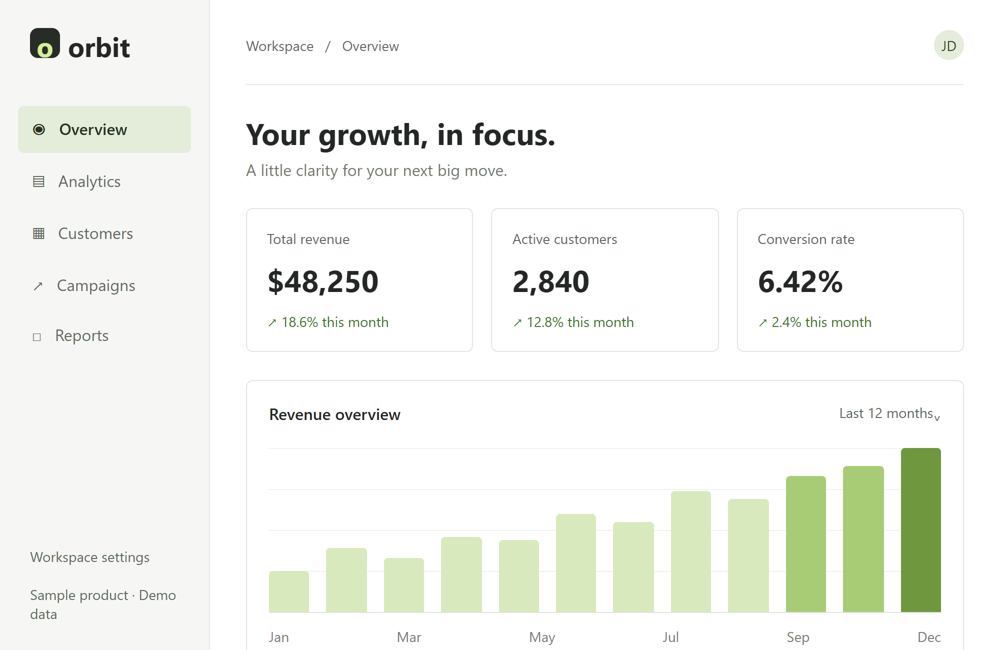

01
Bring your screens.
Upload the screenshots that tell your story. Keep the focus on your actual product.
Give your product screenshots a proper debut.
Turn static screens into videos worth pressing play on.
Built for product demos, feature drops & launch days.

THE SAME SCREENS. A DIFFERENT ENERGY.
From your next feature drop to your big launch.
Start with the screens you already have.
Put your product front and center. Turn the dashboard, the details, and the big reveal into one clear story.
Example uses a fictional product and sample data.
FROM CAPTURE TO CUT
No perfect take to record.
No timeline to wrestle with.
Upload the screenshots that tell your story. Keep the focus on your actual product.
Describe what to highlight and where the video is going. Shape the story around your launch.
Review the result, refine the details, and take your finished video to the world.
LET THE PRODUCT DO THE TALKING
Make the interface the main character.
Every frame should help someone get it.
Give the key feature its moment with purposeful movement and a closer look.
Build around the product you actually made, rather than unrelated stock footage.
Keep your launch content moving as your product grows and changes.
FOR THE THINGS YOU'RE READY TO SHIP
Explore the examples. Choose a paid plan.
Make your next launch a moving one.
BEFORE THE FIRST FRAME
Product demos, feature announcements, and short launch videos are the focus of this concept. The examples show how a static product screen can become a moving story.
No. Video creation requires paid access. You can view the prepared examples before choosing a plan.
You start with screenshots. If you need to show an exact live interaction, such as dragging or typing, a screen recording may be a better fit.
Think product launches, website demos, feature announcements, and social posts. Choose a layout that fits where you plan to share it.